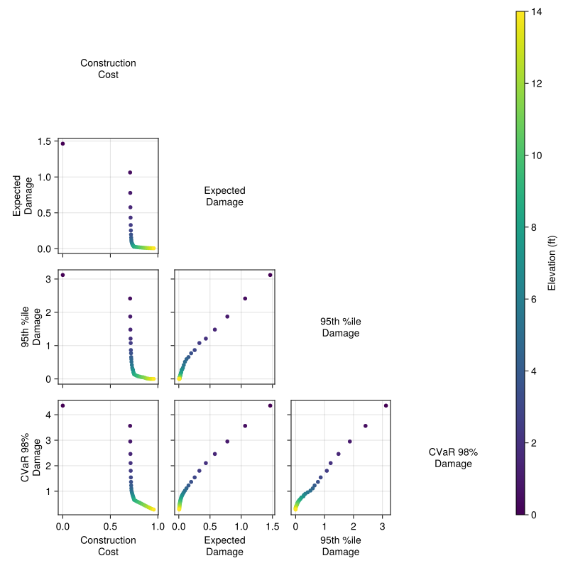
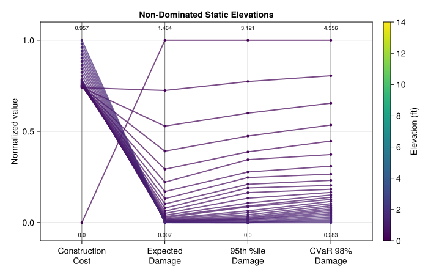

if !isfile("Manifest.toml")
import Pkg
Pkg.instantiate()
end
using SimOptDecisions
using CairoMakie
using DataFrames
using Distributions
using Random
using Statistics
import Metaheuristics # loads the optimization extension
Random.seed!(2026)Lab 10: Pareto Fronts
CEVE 421/521
Draft Material
This content is under development and subject to change.
1 Overview
Monday’s lecture used weights to combine objectives — but weights embed value judgments. What if we showed decision-makers the full trade-off instead?
In this lab you’ll do two things:
- Visualize trade-offs across 4 objectives using a grid of static house elevations
- Use NSGA-II to find Pareto-optimal adaptive policies that decide when and how much to elevate
This builds on Lab 9’s real options idea: instead of committing to a single elevation upfront, an adaptive policy can elevate the house over time in response to observed flood risk. The house elevation model comes from Garner & Keller (2018).
Reference:
- Garner & Keller (2018) — the adaptive elevation strategy used in this lab
2 Before Lab
Complete these steps BEFORE coming to lab:
Accept the GitHub Classroom assignment (link on Canvas)
Clone your repository:
git clone https://github.com/CEVE-421-521/lab-10-S26-yourusername.git cd lab-10-S26-yourusernameOpen the notebook in VS Code or Quarto preview
Run the first code cell — it will install any missing packages (may take 10-15 minutes the first time)
Submission: You will render this notebook to PDF and submit the PDF to Canvas. See Section 7 for details.
3 Setup
Run the cells in this section to load packages and define the model. You don’t need to modify any of this code — just run it and read the comments.
3.1 Packages
3.2 Model
The house elevation model simulates a coastal house over a 70-year horizon. Each year, storm surge can flood the house; elevating the house reduces flood damage but costs money upfront.
Model definitions (click to expand)
# === Configuration ===
Base.@kwdef struct HouseConfig{T<:AbstractFloat} <: AbstractConfig
horizon::Int = 70
house_height::T = 4.0
house_area_ft2::T = 1500.0
house_value::T = 200_000.0
end
# === Scenario ===
@scenariodef HouseScenario begin
@timeseries water_levels
@continuous dd_threshold
@continuous dd_saturation
@continuous discount_rate
end
function sample_scenario(rng::AbstractRNG, horizon::Int)
# Draw GEV parameters from prior distributions
μ = rand(rng, Normal(2.8, 0.3))
σ = rand(rng, truncated(Normal(1.0, 0.15); lower=0.3))
ξ = rand(rng, truncated(Normal(0.15, 0.05); lower=-0.2, upper=0.5))
# Generate water level time series from GEV
surge_dist = GeneralizedExtremeValue(μ, σ, ξ)
water_levels = [rand(rng, surge_dist) for _ in 1:horizon]
HouseScenario(;
water_levels=water_levels,
dd_threshold=rand(rng, Normal(0.0, 0.25)),
dd_saturation=rand(rng, Normal(8.0, 0.5)),
discount_rate=rand(rng, truncated(Normal(0.03, 0.015); lower=0.01, upper=0.07)),
)
end
# === State and Action ===
struct HouseState{T<:AbstractFloat} <: AbstractState
elevation_ft::T
end
struct ElevationAction{T<:AbstractFloat} <: AbstractAction
elevation_ft::T
end
# === Outcome ===
@outcomedef HouseOutcome begin
@continuous construction_cost
@continuous npv_damages
end
# === Physics ===
function depth_damage(depth::T, threshold::T, saturation::T) where {T<:AbstractFloat}
depth <= threshold && return zero(T)
depth >= saturation && return one(T)
midpoint = (threshold + saturation) / 2
steepness = T(6) / (saturation - threshold)
return one(T) / (one(T) + exp(-steepness * (depth - midpoint)))
end
function elevation_cost(Δh::Real, area_ft2::Real, house_value::Real)
Δh <= 0 && return 0.0
base_cost = 20_745.0
thresholds = [0.0, 5.0, 8.5, 12.0, 14.0]
rates = [80.36, 82.5, 86.25, 103.75, 113.75]
rate = rates[1]
for i in 1:(length(thresholds) - 1)
if Δh <= thresholds[i + 1]
t = (Δh - thresholds[i]) / (thresholds[i + 1] - thresholds[i])
rate = rates[i] + t * (rates[i + 1] - rates[i])
break
end
rate = rates[i + 1]
end
return (base_cost + area_ft2 * rate) / house_value
end
elevation_cost(Δh::Real) = elevation_cost(Δh, 1500.0, 200_000.0)3.3 Policies
We define two policy types.
Static policy: elevate the house once, at the start, to a fixed height.
@policydef StaticElevationPolicy begin
@continuous elevation_ft 0.0 14.0
endAdaptive policy: each year, check if the gap between the floor level and the current water level is less than a buffer. If so, elevate by enough to restore the buffer plus additional freeboard. This is inspired by the adaptive strategy in Garner & Keller (2018) — rather than committing to a single elevation upfront, the homeowner responds to observed conditions.
@policydef AdaptiveElevationPolicy begin
@continuous buffer 0.0 6.0
@continuous freeboard 0.0 6.0
end3.4 Callbacks
These callbacks connect the policies and physics to the simulation framework. You don’t need to modify them.
Simulation callbacks (click to expand)
SimOptDecisions.initialize(::HouseConfig, ::HouseScenario, ::AbstractRNG) = HouseState(0.0)
SimOptDecisions.time_axis(config::HouseConfig, ::HouseScenario) = 1:(config.horizon)
# Static policy: elevate at t=1 only
function SimOptDecisions.get_action(
policy::StaticElevationPolicy, state::HouseState, t::TimeStep, scenario::HouseScenario
)
if is_first(t)
return ElevationAction(value(policy.elevation_ft))
end
return ElevationAction(0.0)
end
# Adaptive policy: buffer/freeboard rule each year
function SimOptDecisions.get_action(
policy::AdaptiveElevationPolicy, state::HouseState, t::TimeStep, scenario::HouseScenario
)
floor_level = 4.0 + state.elevation_ft # house_height + current elevation
water_level = scenario.water_levels[t]
gap = floor_level - water_level
buffer_val = value(policy.buffer)
freeboard_val = value(policy.freeboard)
if gap < buffer_val
needed = (buffer_val - gap) + freeboard_val
max_additional = 14.0 - state.elevation_ft
actual = min(needed, max_additional)
return ElevationAction(max(0.0, actual))
end
return ElevationAction(0.0)
end
function SimOptDecisions.run_timestep(
state::HouseState, action::ElevationAction, t::TimeStep,
config::HouseConfig, scenario::HouseScenario, rng::AbstractRNG
)
new_elevation = state.elevation_ft + action.elevation_ft
construction_cost = elevation_cost(action.elevation_ft, config.house_area_ft2, config.house_value)
water_level = scenario.water_levels[t]
floor_level = config.house_height + new_elevation
flood_depth = water_level - floor_level
damage = depth_damage(flood_depth, value(scenario.dd_threshold), value(scenario.dd_saturation))
return (HouseState(new_elevation), (construction_cost=construction_cost, damage_fraction=damage))
end
function SimOptDecisions.compute_outcome(
step_records::Vector, config::HouseConfig, scenario::HouseScenario
)
construction_cost = sum(r.construction_cost for r in step_records)
npv_damages = sum(
step_records[t].damage_fraction * discount_factor(value(scenario.discount_rate), t)
for t in eachindex(step_records)
)
return HouseOutcome(; construction_cost, npv_damages)
endKey design choice: run_timestep applies whatever elevation the action specifies — it does NOT gate on is_first(t). For the static policy, get_action returns zero after the first timestep, so only one elevation happens. For the adaptive policy, get_action can return a nonzero elevation in any year, and compute_outcome sums ALL construction costs across the full horizon.
3.5 Metrics
When comparing policies, we don’t look at individual scenario outcomes. Instead, we aggregate across all scenarios into summary metrics. The optimizer uses these metrics as objectives.
"""
Compute metrics from simulation outcomes across many scenarios.
Used by `optimize()` to evaluate candidate policies.
"""
function calculate_metrics(outcomes)
damages = [value(o.npv_damages) for o in outcomes]
costs = [value(o.construction_cost) for o in outcomes]
sorted_damages = sort(damages)
n = length(damages)
return (
construction_cost=mean(costs),
expected_damage=mean(damages),
q95_damage=sorted_damages[max(1, ceil(Int, 0.95 * n))],
cvar_98=mean(sorted_damages[max(1, ceil(Int, 0.98 * n)):end]),
)
endFour metrics capture different aspects of performance:
construction_cost: average upfront spending across scenariosexpected_damage: average NPV of flood damagesq95_damage: 95th percentile damage (Value at Risk)cvar_98: average of the worst 2% of damage outcomes (Conditional Value at Risk)
3.6 Scenarios
config = HouseConfig()
n_scenarios = 500
rng = Random.Xoshiro(2026)
scenarios = [sample_scenario(rng, config.horizon) for _ in 1:n_scenarios]
println("Config: $(config.horizon)-year horizon, \$$(Int(config.house_value)) house")
println("Scenarios: $(n_scenarios) sampled futures")4 Section 1: Brute-Force Trade-offs
Before running any optimizer, let’s evaluate every static elevation from 0 to 14 ft (in 0.5 ft steps) across all 500 scenarios. This brute-force grid lets us see the full shape of the trade-off space.
4.1 Run the Grid
policies = [StaticElevationPolicy(; elevation_ft=e) for e in 0.0:0.5:14.0]
result = explore(config, scenarios, policies; progress=false)Extract the four metrics for each elevation:
elevations = collect(0.0:0.5:14.0)
npv_damages = Array(result[:npv_damages])
construction = Array(result[:construction_cost])
metrics_df = DataFrame(;
elevation=elevations,
construction_cost=[mean(construction[p, :]) for p in axes(construction, 1)],
expected_damage=[mean(npv_damages[p, :]) for p in axes(npv_damages, 1)],
q95_damage=[
sort(npv_damages[p, :])[max(1, ceil(Int, 0.95 * n_scenarios))] for
p in axes(npv_damages, 1)
],
cvar_98=[
mean(sort(npv_damages[p, :])[max(1, ceil(Int, 0.98 * n_scenarios)):end]) for
p in axes(npv_damages, 1)
],
)Checkpoint: At 0 ft elevation, construction cost should be zero and damage metrics should be at their highest. At 14 ft, construction cost should be at its highest and damage metrics near zero. If your results don’t follow this pattern, check that the setup cells ran successfully.
4.2 Pair Plot
The pair plot shows every pair of objectives as a scatter plot. Each point is one static elevation, colored by elevation height.
let
obj_names = ["Construction\nCost", "Expected\nDamage", "95th %ile\nDamage", "CVaR 98%\nDamage"]
obj_cols = [:construction_cost, :expected_damage, :q95_damage, :cvar_98]
n_obj = length(obj_cols)
fig = Figure(; size=(800, 800))
for row in 1:n_obj
for col in 1:n_obj
if row == col
# Diagonal: label
ax = Axis(fig[row, col]; limits=(0, 1, 0, 1))
hidedecorations!(ax)
hidespines!(ax)
text!(ax, 0.5, 0.5; text=obj_names[row], align=(:center, :center), fontsize=14)
elseif row > col
# Lower triangle: scatter
ax = Axis(fig[row, col])
scatter!(
ax,
metrics_df[!, obj_cols[col]],
metrics_df[!, obj_cols[row]];
color=metrics_df.elevation,
colormap=:viridis,
markersize=8,
)
if col == 1
ax.ylabel = obj_names[row]
else
hideydecorations!(ax; ticks=false, grid=false)
end
if row == n_obj
ax.xlabel = obj_names[col]
else
hidexdecorations!(ax; ticks=false, grid=false)
end
else
# Upper triangle: empty
ax = Axis(fig[row, col])
hidedecorations!(ax)
hidespines!(ax)
end
end
end
Colorbar(fig[:, n_obj + 1]; colormap=:viridis, limits=(0, 14), label="Elevation (ft)")
fig
end
4.3 Non-Dominated Solutions
A solution is non-dominated (Pareto-optimal) if no other solution is better on every objective simultaneously. Let’s identify which static elevations are non-dominated across all four metrics.
function is_nondominated(i, df, obj_cols)
for j in axes(df, 1)
i == j && continue
all_leq = all(df[j, c] <= df[i, c] for c in obj_cols)
any_lt = any(df[j, c] < df[i, c] for c in obj_cols)
if all_leq && any_lt
return false
end
end
return true
end
obj_cols = [:construction_cost, :expected_damage, :q95_damage, :cvar_98]
nondom_mask = [is_nondominated(i, metrics_df, obj_cols) for i in axes(metrics_df, 1)]
nondom_df = metrics_df[nondom_mask, :]
println("$(nrow(nondom_df)) of $(nrow(metrics_df)) policies are non-dominated")4.4 Parallel Axis Plot
The parallel axis plot shows each non-dominated solution as a polyline connecting its four objective values. Each axis is normalized to [0, 1] so the objectives are comparable.
let
obj_cols = [:construction_cost, :expected_damage, :q95_damage, :cvar_98]
obj_labels = ["Construction\nCost", "Expected\nDamage", "95th %ile\nDamage", "CVaR 98%\nDamage"]
n_obj = length(obj_cols)
# Normalize against non-dominated solutions only (spreads trade-offs across full [0,1] range)
mins = [minimum(nondom_df[!, c]) for c in obj_cols]
maxs = [maximum(nondom_df[!, c]) for c in obj_cols]
fig = Figure(; size=(700, 450))
ax = Axis(
fig[1, 1];
xticks=(1:n_obj, obj_labels),
ylabel="Normalized value",
title="Non-Dominated Static Elevations",
limits=(0.5, n_obj + 0.5, -0.1, 1.1),
)
# Draw vertical axis lines
for j in 1:n_obj
vlines!(ax, [j]; color=:gray, linewidth=1)
text!(ax, j, -0.05; text=string(round(mins[j]; digits=3)), align=(:center, :top), fontsize=9)
text!(ax, j, 1.05; text=string(round(maxs[j]; digits=3)), align=(:center, :bottom), fontsize=9)
end
# Draw polylines for non-dominated solutions
colors = cgrad(:viridis, nrow(nondom_df))
for (idx, row) in enumerate(eachrow(nondom_df))
vals = [(row[c] - mins[j]) / max(maxs[j] - mins[j], 1e-10) for (j, c) in enumerate(obj_cols)]
lines!(ax, 1:n_obj, vals; color=colors[idx], linewidth=2, alpha=0.7)
scatter!(ax, 1:n_obj, vals; color=colors[idx], markersize=6)
end
Colorbar(
fig[1, 2];
colormap=:viridis,
limits=(minimum(nondom_df.elevation), maximum(nondom_df.elevation)),
label="Elevation (ft)",
)
fig
end
5 Section 2: Multi-Objective Optimization
The brute-force grid only works for one-parameter policies (static elevation). The adaptive buffer/freeboard policy has two parameters, making grid search less practical. Instead, we’ll use NSGA-II — a multi-objective evolutionary algorithm — to search for Pareto-optimal adaptive policies.
This approach mirrors Garner & Keller (2018), where direct policy search was used to find adaptive strategies for house elevation under sea-level rise uncertainty.
5.1 Choose Your Objectives
Pick two of the four metrics to optimize. The minimize(:name) syntax tells the optimizer which metrics to minimize.
# Your code hereAvailable objectives (all to be minimized):
:construction_cost— average upfront spending:expected_damage— average NPV of flood damages:q95_damage— 95th percentile damage:cvar_98— average of the worst 2% of damage outcomes
5.2 Configure the Optimizer
backend = MetaheuristicsBackend(;
algorithm=:NSGA2,
max_iterations=100,
population_size=30,
parallel=true,
)5.3 Run Optimization
# Your code hereThis optimization may take 1–3 minutes depending on your machine. The algorithm evaluates thousands of candidate policies, each simulated across all 500 scenarios.
5.4 Visualize the Pareto Front
Plot the adaptive Pareto front alongside the static grid results for comparison. Use your two chosen objectives as the axes.
# Your code here6 Wrap-Up
Key takeaways:
- Choosing objectives is a value judgment — the Pareto front changes depending on which metrics you optimize. The analyst’s job is to present trade-offs, not prescribe a single answer.
- The Pareto front separates analysis from decision — it shows what is technically achievable. Stakeholders with different risk tolerances, budgets, and values can each identify their preferred solution.
- Adaptive policies can dominate static ones — by conditioning actions on observed conditions, adaptive strategies exploit information revealed over time, achieving better trade-offs than any fixed design.
7 Submission
Write your answers in the response boxes above.
Render to PDF:
- In VS Code: Open the command palette (
Cmd+Shift+P/Ctrl+Shift+P) –> “Quarto: Render Document” –> select Typst PDF - Or from the terminal:
quarto render index.qmd --to typst
- In VS Code: Open the command palette (
Submit the PDF to the Lab 10 assignment on Canvas.
Push your code to GitHub (for backup):
git add -A && git commit -m "Lab 10 complete" && git push
Checklist
Before submitting:
References
Garner, G. G., & Keller, K. (2018). Using direct policy search to identify robust strategies in adapting to uncertain sea-level rise and storm surge. Environmental Modelling & Software, 107, 96–104. https://doi.org/10.1016/j.envsoft.2018.05.006